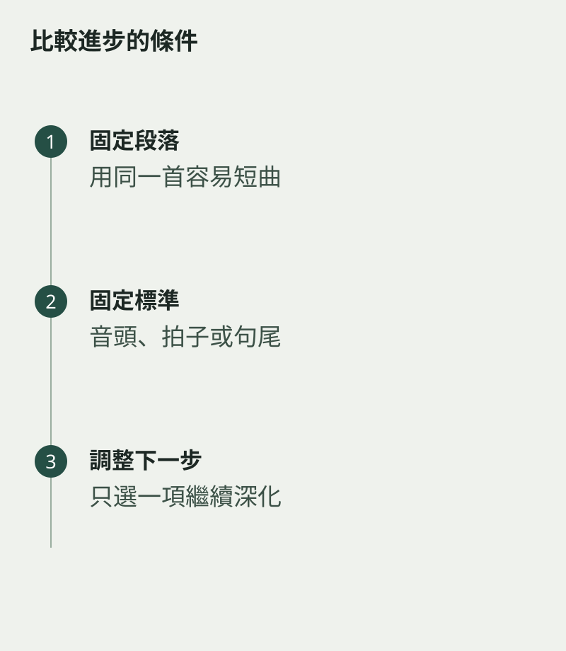

每天都聽自己演奏，很容易只看見今天還未做到的地方。保留一段固定短曲，每隔一段時間錄一次，能讓進展有可比較的形狀。選容易而有代表性的段落，比每次換新難曲更清楚。
盡量使用相近的錄音位置和演奏條件，不需要專業設備，但要避免一段很近、一段很遠，令音量與房間聲掩蓋了真正差異。
選三個可以聽的標準
例如起音是否更自然、拍子是否更穩、句尾是否更完整。標準不必多，也不必給分數。用一句話描述改變，比把整段演奏評成七分或八分更有幫助。
也留意你演奏時的感覺：是否少了多餘用力，能否一邊吹一邊聽伴奏。這些未必全從錄音聽到，可以在旁邊補一句短記錄。

有些能力會先後出現
音色改善時，速度可能暫時較慢；重新調整姿勢時，某些舊習慣也可能需要重學。不要因為所有指標沒有同時上升，就否定整段學習。
回看之後，選一個下一階段重點，而不是重新列出所有不足。成長常沒有很響亮的聲音，它可能只是某個入口不再猶豫，或一口氣終於能自然走到句尾。把它聽見，才能更公平地看待自己的努力。